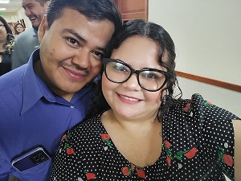

About Me

Eliel Diaz
I`m from Honduras, I´m studying bachelor's science
in software development, I like swimming, and I spend time with my wife.
We don`t have children yet; I´m currently self-employed,
and I love the teachings of BYU-Idaho because they align with the
teachings of the prophets and apostles.
I´m pursuing the WDD degree because I love technology and creating things.
Web design allows me to use my creativity and gifts to create amazing things.
One advantage of studying web design is that I can create or administrate my own website.
I have been a member of the church since my childhood.
My favorite scripture is the first chapter and first verse of
the book of 1 Nephi, where he talks about his family,
and I can learn that all families are important to God.
This is a new pre